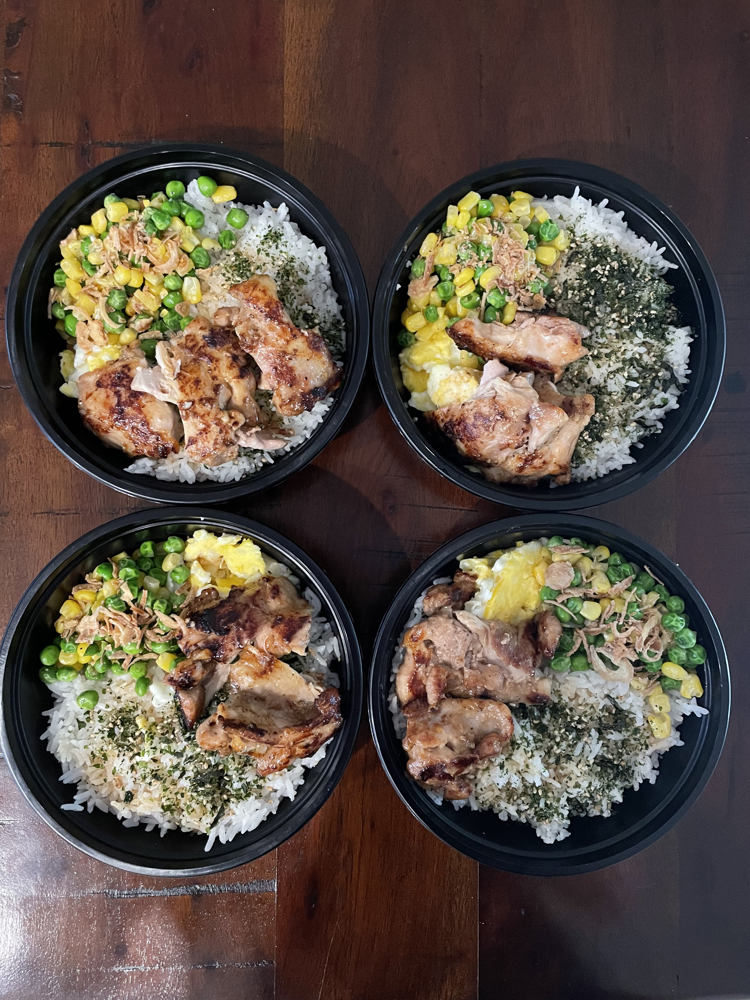

Home
Chicken Galbi Meal Prep

Ingredients
- 1 pound of chicken theigh (can also use breast)
- 2 tbsp of Korean galbi sauce
- Pinch of black pepper
- Frozen peas & corn // Butter, Salt, Pepper, Minced Garlic
- 3 cups of uncoooked rice
- Rice seasoning (furikake)
- Soy sauce
Optional Ingredients: Eggs, dried onion.
Steps
- Cook rice
- Cut the chicken and place into a bowl along with the Korean galbi sauce & black pepper. Marinate for 30 minutes
- Cook peas & corn inside a pot alongisde the butter, salt, pepper, and minced garlic.
- If desired, can also scamble 5 eggs. Set aside.
- Once chicken is done marinating, pan fry on high 3/4 minutes on each side.
- Equally distribute the rice, peas, corn, and egg into 4 separate containers.
- Season the rice with furikake and soy sauce.
- Once chicken is cooked, distirubte equally between the containers.
- Top with dried onion if desired.